Illustrated Walkthrough — Every Step, With Screenshots
A screenshot for each step of the whole GitOps workflow: AWS setup, the Spacelift integration, creating a stack, deploying, and the OPA policy blocking a bad change in a pull request.
Note on redaction. Live screenshots have their AWS account IDs and ARNs blacked out (
████). The AWS-console steps (2–4) are shown as faithful labeled diagrams rather than live console captures — the steps and exact values are accurate. Everything on the Spacelift side is a real, redacted screenshot from the account used to build this demo.
The pipeline
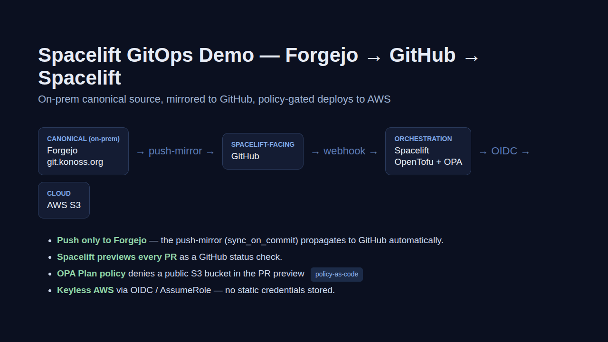
Step 1 — Where the tutorial lives
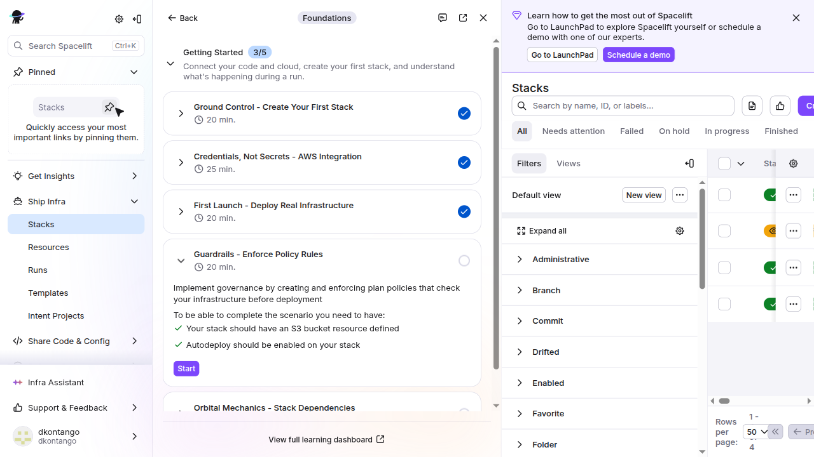
Step 2 — Register Spacelift as an OIDC provider (AWS)
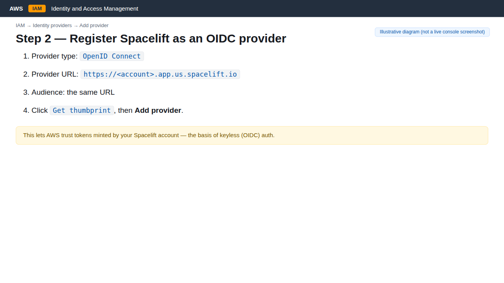
Step 3 — Create the IAM role Spacelift assumes (AWS)
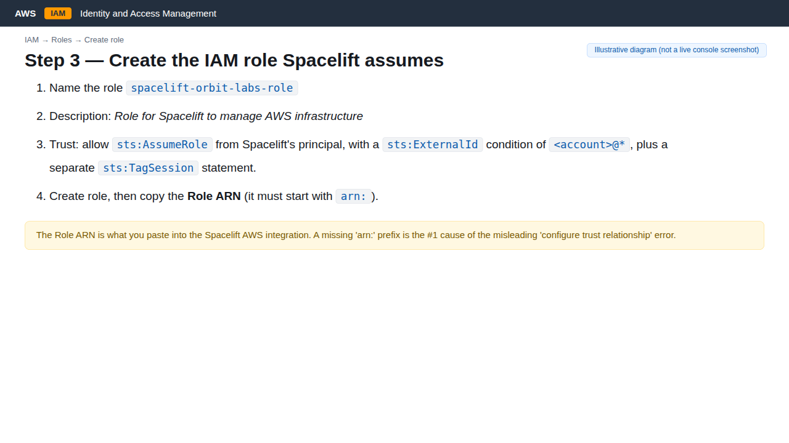
spacelift-orbit-labs-role with a trust policy allowing sts:AssumeRole from Spacelift's principal (ExternalId <account>@*) plus a separate sts:TagSession statement. Copy the Role ARN — it must start with arn:.Step 4 — Attach permissions to the role (AWS)
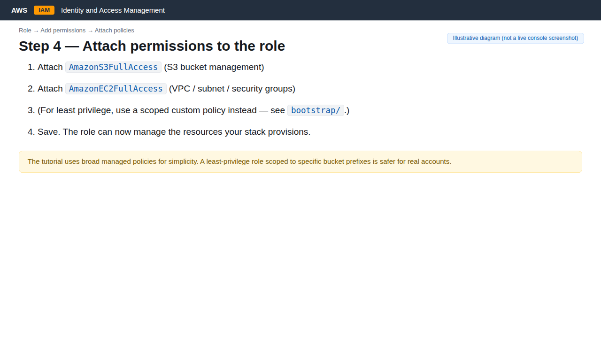
AmazonS3FullAccess + AmazonEC2FullAccess (the tutorial's broad choice). For real accounts, a least-privilege scoped policy is safer.Step 5 — Create the AWS cloud integration in Spacelift
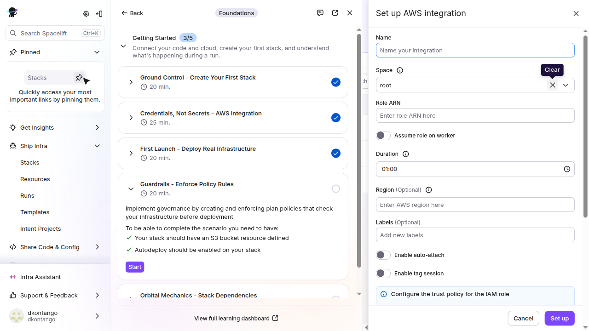
us-east-1. The trust-policy example is shown (principal account redacted).Step 6 — The integration exists at the account level
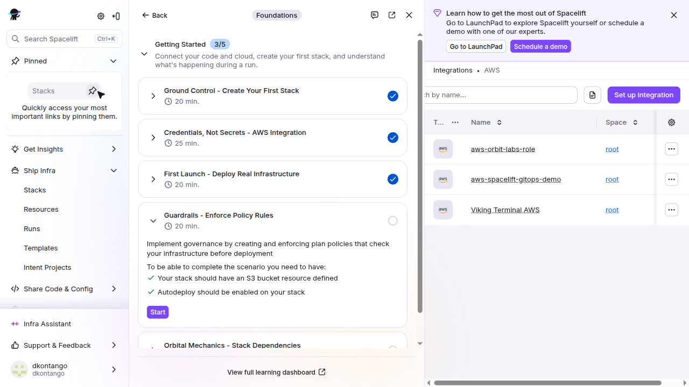
Step 7 — Create a stack: details
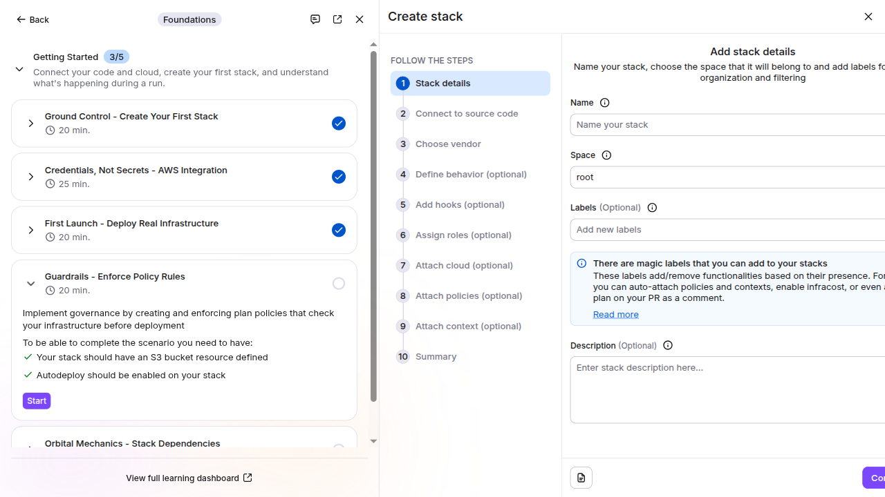
Step 8 — Create a stack: connect source code
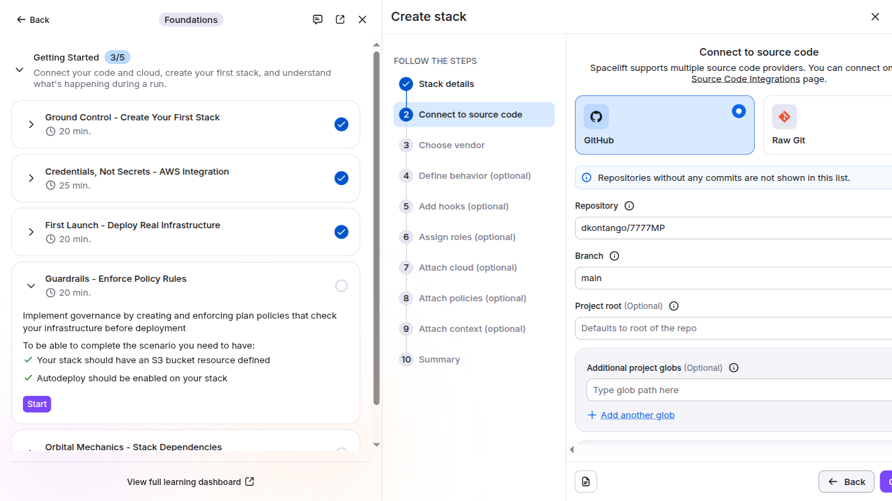
stacks/sandbox) and branch main. Because Forgejo mirrors to GitHub, this is the repo Spacelift watches.Step 9 — Create a stack: choose vendor
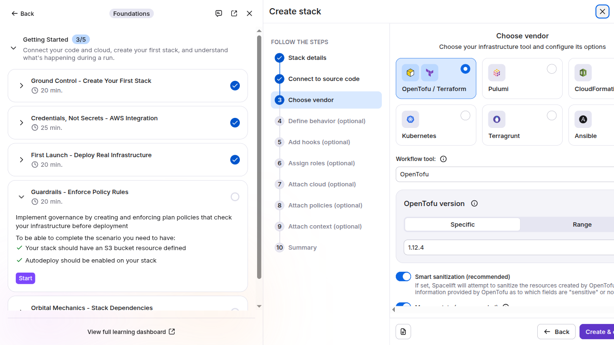
Step 10 — Attach the integration TO the stack
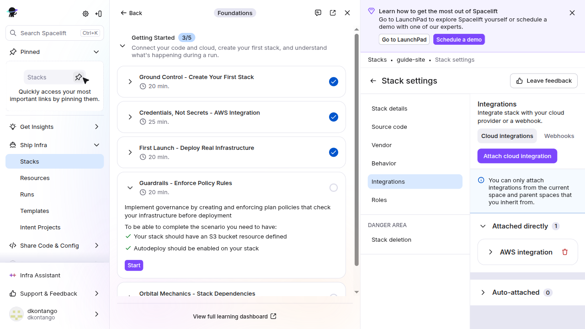
no valid credential sources almost always means the integration isn't attached to this stack. (ARN redacted.)Step 11 — The OPA policy (the bonus)
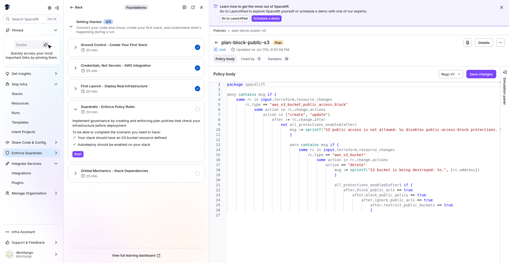
Step 12 — Attach the policy to the stack
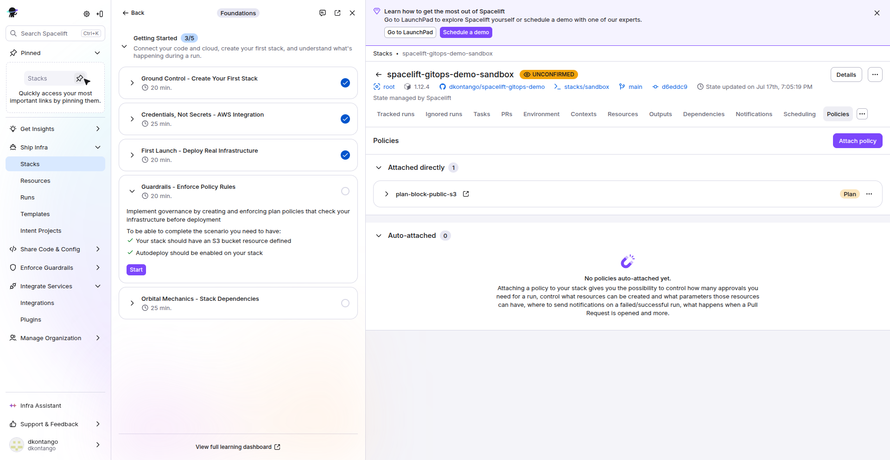
plan-block-public-s3 Plan policy attached to the stack. It now runs on every proposed run (PR preview).Step 13 — Deploy: a finished run
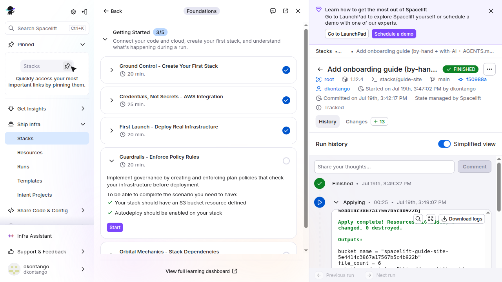
guide-site stack deployed the guide itself to S3 — the guide is deployed by the pipeline it documents.Step 14 — The guardrail in action: PR blocked
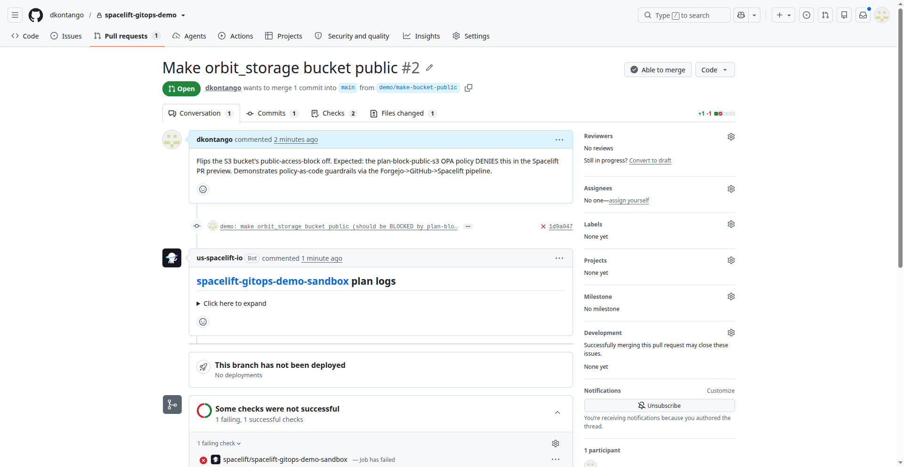
Step 15 — Why it failed: the policy denial
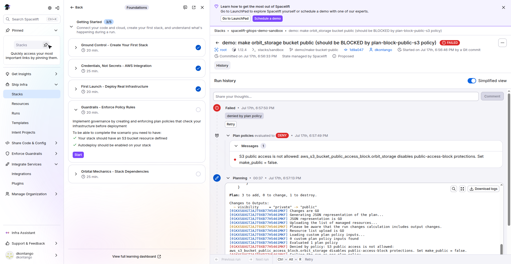
Step 16 — Fix it: the PR passes
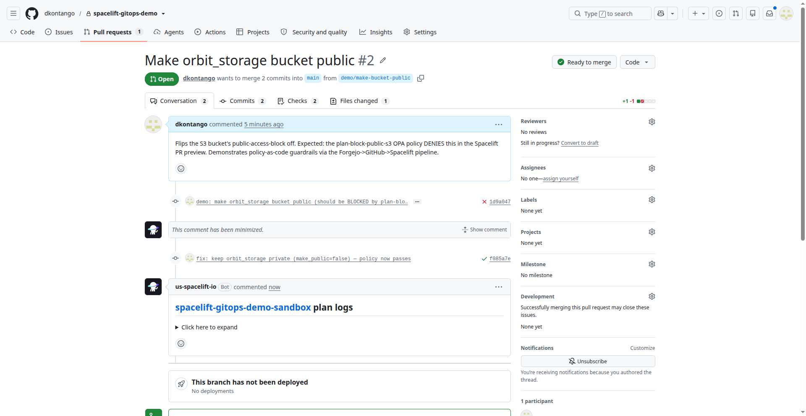
What this proves
Branch → PR → Spacelift preview → policy blocks a risky change → fix → approve/merge → deploy — the full GitOps loop with keyless credentials and a policy-as-code guardrail, driven from an on-prem Forgejo repo mirrored to GitHub.